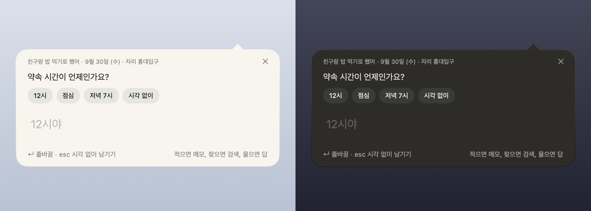
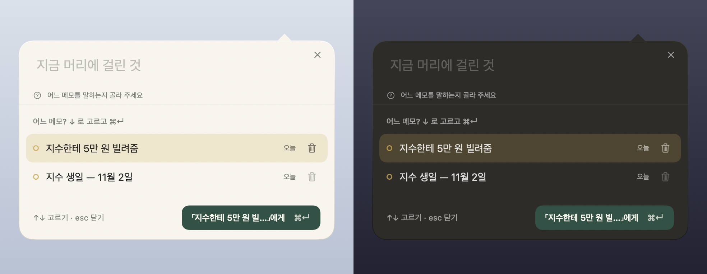

상자 하나가 적고, 찾고, 묻고, 시킵니다.
모드를 고르지 않습니다. 무엇을 하려는 말인지는 앱이 가리고, 단추의 라벨이 그것을 말합니다 — 메모 남기기, 달력에 남기기, 메모에게 묻기, 「치과 예약」에 적용. 앱이 하나를 더 알아야 할 때만 그 한 가지를 묻습니다.




모델은 물을 때만 올립니다. 「금요일 10시에 다시 알려줘」처럼 시각과 할 일이 분명한 말은 앱의 파서가 읽으므로 모델 없이도 즉시 됩니다. 묻기에 쓰는 모델(Gemma 4 E2B, 2.6GB)은 원할 때 한 번 받고, 그 뒤로는 인터넷 없이 이 기기 안에서 돕니다.
한 바퀴 — 적고, 다시 보고, 서랍에 넣고, 돌아오기.
- 적기 ⌥⌘N 에 한 줄. 날짜가 읽히면 칩이 뜨고 달력이 맡습니다.
- 다시 보기 종이를 우클릭해 다시 볼 시각을 정합니다. 일정은 그대로입니다.
- 서랍 종이가 구석 탭으로 날아 들어가고, 펼쳐서 폴더로 나누고 도로 꺼냅니다.
- 돌아오기 시각이 되면 종이가 스스로 바탕화면으로 올라와 그대로 있습니다.
실제 앱을 화면 기록한 영상입니다. 손은 앱이 스스로 움직였고, 화면의 창은 전부 진짜입니다.
같은 메모를, 폰에서도.
아이폰 앱은 iCloud 로 같은 마크다운 파일을 봅니다. 우리 계정도, 손으로 맞출 동기화도 없습니다. 대충 적어 두고 언제 다시 볼지만 정하면 폰이 다시 펼쳐 줍니다. 「이 메모에게 시키기」도 폰에 있습니다 — 모델 없이 되는 말은 폰에서도 모델 없이 됩니다.
- 적기 날짜는 앱이 읽고, 한 번 눌러 달력에 남깁니다.
- 다시 보기 메모의 종 — 한 시간 뒤, 내일 아침, 원하는 아무 때나.
- 지금 다가오는 것이 맨 위에 섭니다. 「봤어요」로 내려놓습니다.
- 배너 알림은 한 번만 켭니다. 배너를 누르면 그 메모가 열립니다.
iOS 시뮬레이터에서 앱이 스스로 움직인 것을 기록했습니다. 아이폰 앱은 App Store 심사 중입니다. 나오면 단추가 생깁니다. 아이폰 앱은 App Store 에 있습니다.
왜 이렇게 생겼는지.
사용자는 게으르다는 것을 전제로 만들었습니다. 그래서 네 가지를 지킵니다.
완성을 요구하지 않습니다
쓰다 만 것, 제목 없는 것, 날짜 없는 것이 여기서는 정상입니다. 채우라는 빈칸도, 잊어버릴 저장 버튼도 없습니다.
시간이 유일한 구조입니다
종이는 분류를 묻지 않습니다. 달력이 만지는 물건입니다 — 일정을 집어 다른 날에 놓고, 한 번 눌러 미룹니다. 폴더는 밀어 둔 뒤의 서랍 안에만 있습니다.
오래된 것은 스스로 물러납니다
다 체크한 목록과 지난 일정은 조용히 서랍으로 내려갑니다. 지운 것이 아닙니다 — 서랍을 열면 거기 있고, 한 번에 도로 꺼냅니다.
앱이 앞에 나서지 않습니다
가만히 있는 메모는 글자와 종이뿐입니다. 조작은 포인터가 올 때 떠올랐다 떠나면 물러납니다. 알트탭에도 독에도 서지 않습니다.
바탕화면의 종이, 만지는 달력.


ㅈㅂㄱ 같은 첫소리로도 찾습니다.
다시 보기 — 필요할 때 다시 펼쳐 드립니다.
대충 적어 두고, 다시 볼 시각만 정합니다. 종이를 우클릭해 「다시 보기…」(폰은 편집 화면의 종)에서 시각을 고르거나, 상자에 「금요일 10시에 다시 알려줘」라고 시킵니다. 일정은 그대로입니다 — 회의는 3시, 다시 보는 건 2시 반. 그 시각에 맥은 종이를 앞으로 꺼내고, 폰은 목록 위 「지금」에 올립니다.
시스템 알림은 켠 기기에서만. 「이 기기에서 알림 받기」를 켜면 그때 한 번 권한을 묻고, 그 뒤로 일정 시각과 다시 볼 시각에 알림이 오며 누르면 그 메모가 열립니다. 날짜만 있는 메모에 아침 알림을 지어내지 않고, 지운 것과 치워 둔 것은 걸지 않습니다. 서버가 없으니 기기 사이의 알림 동기화를 약속하지 않습니다.
쓰는 법.
| ⌥⌘N | 빠른 입력. 메뉴바 아이콘 밑에 말풍선으로 뜹니다. 적으면 메모, 찾으면 검색, 물으면 답, 시키면 합니다. 첫소리로도 찾습니다. |
| ⌘⏎ | 적기 끝. 단추의 라벨이 지금 할 일을 말합니다. ⏎ 은 다음 줄입니다 — 메모는 한 줄로 끝나지 않으니까. |
| ⌥⌘V | 클립보드 즉시 메모. 복사해 둔 글이나 사진이 창을 열지 않고 바로 새 종이가 됩니다. |
| esc | 닫기. 적던 글은 상자가 기억합니다 — 앱을 껐다 켜도 남습니다. 되묻는 중이면 시각 없이 그대로 적습니다. |
| 메모의 × | 서랍에 넣습니다. 삭제가 아닙니다. 우클릭하면 폴더를 골라 바로 넣거나, 「이 메모에게 시키기…」로 상자를 엽니다. |
| 붉은 휴지통 | 지웁니다. 종이는 그 자리에 남아 8초 동안 되돌리기를 들고 있고, 그 뒤로도 30일 안에 되돌릴 수 있습니다. |
| 달력 아이콘 | 날짜가 없는 메모를 달력에 놓습니다. 날짜가 있으면 그 일정이 달력의 어디에 있는지 펼쳐 보여 줍니다. |
끝난 것은 스스로 물러납니다. 칸을 전부 체크한 목록은 마지막으로 손댄 지 사흘 뒤, 지난 일정은 그 다음 날이 끝나면 바탕화면에서 서랍으로 내려갑니다. 파일에도 검색에도 달력에도 그대로 있습니다. 고정해 둔 메모는 건드리지 않습니다.
메모는 파일입니다.
lazymemo 를 지워도 메모는 남습니다. 정본은 사용자 컴퓨터에 있는 마크다운 파일이고, Finder 로 열어도 다른 에디터로 고쳐도 괜찮습니다.
~/Documents/lazymemo/ notes/2026/09/01K3ZQ….md ← 정본. 날짜·자리·폴더 이름표도 이 안의 몇 줄입니다 .trash/ ← 삭제한 메모 (30일 보존)
메뉴 → 설정 → 「iCloud 로 동기화…」를 누르면 이 폴더가 iCloud Drive 의 「LazyMemo」 폴더로 들어가고,
아이폰의 lazymemo 가 같은 폴더를 봅니다. App Store 판은 처음부터 그 자리가 기본입니다. 앱 없이 아이폰 단축어로
.md 를 떨어뜨려도 받아 앉힙니다.
Claude 연동은 선택입니다.
GitHub 판은 MCP 서버를 함께 빌드합니다. 등록하면 Claude Desktop 에서 「다음 주 화요일 오후 2시에 치과 예약 잡아줘」, 「장보기 폴더에 우유 넣어 줘」처럼 말할 수 있습니다. API 키는 필요 없습니다. lazymemo 가 Claude 를 부르는 것이 아니라 Claude 가 lazymemo 를 부르는 방향이라, 비용은 사용자의 Claude 구독이 부담합니다.
Claude 가 메모를 지울 수 있기 때문에, 영구 삭제하는 도구는 아예 만들지 않았습니다.
MCP 서버가 닿는 코드에 하드 삭제 함수 자체가 없습니다. 삭제는 .trash/ 로 옮기는 것까지이고, 되돌리기는 호출 한 번입니다.
상자의 묻기·시키기는 이것과 다릅니다 — 그쪽은 이 기기의 모델이 이 기기 안에서 합니다. App Store 판에도 있습니다.
프라이버시.
메모 본문이 기기 밖으로 나가는 길은 둘뿐입니다 — 당신의 iCloud(설정에서 직접 켤 때, 애플이 옮기고 보관합니다)와 GitHub 판의 Claude 연동(직접 등록할 때). 상자의 묻기·시키기는 기기 안의 모델이 하므로 어디에도 나가지 않습니다. 우리 서버는 없고, 우리에게 오는 것도 없습니다 — 분석 도구도 추적기도 크래시 리포터도 없습니다.
그 밖에 나가는 것은 주소나 좌표 하나입니다 — 링크를 카드로 펼칠 때 그 주소, 자리 카드가 애플 지도에 묻는 좌표, 모델을 받을 때 그 파일, GitHub 판이 새 판을 물어보는 주소. 전부 설정에서 끄거나 누를 때만 일어납니다. 하나도 빠짐없이 적은 것이 개인정보 처리방침입니다.
이 페이지도 같은 약속을 지킵니다. 바깥으로 나가는 요청이 하나도 없습니다 — 추적기도 웹폰트도 없고, 영상과 그림도 이 페이지와 같은 자리에서 옵니다. 배포 워크플로가 내보내기 전에 그것을 실제로 검사합니다.
받기.
맥 — App Store심사 중
대부분의 분께 권하는 길입니다. 애플이 서명하고, 샌드박스 안에서 돌고, 새 판은 스토어가 맡습니다. 메모 폴더의 기본 자리는 iCloud Drive 의 「LazyMemo」 — 아이폰과 같은 자리입니다. Claude 연동은 이 판에 없습니다.
아이폰 — App Store심사 중
켜면 바로 키보드입니다. 한 줄 적고 「남기기」, 날짜는 앱이 읽습니다. 공유 시트의 「lazymemo 에 적기」로 어느 앱에서든 던지고, 맥과는 iCloud 로 같은 파일을 봅니다.
GitHub 판 — Claude 연동이 필요하면
Homebrew
두 줄입니다. 그 뒤로는 갱신을 앱이 스스로 알려 줍니다. Claude 연동과 자체 업데이트는 이 판에만 있습니다.
brew tap bunhine0452/lazymemo brew install --cask lazymemo
소스에서 빌드
Xcode 없이 빌드됩니다 — Command Line Tools 면 충분합니다. 코드를 읽고 쓰는 분께는 이 길이 가장 정직합니다.
git clone https://github.com/bunhine0452/lazymemo cd lazymemo ./scripts/build-app.sh
GitHub 판은 아직 공증받지 않았습니다. 내려받은 앱에는 검역 딱지가 붙고, macOS 15 부터는 딱지가 붙은 미공증 앱이 그냥 「손상되었습니다」로 끝납니다. 그래서 cask 가 설치 직후 그 딱지를 떼어 냅니다 — 미봉책입니다. 그 처리가 미덥지 않으면 App Store 판을 쓰거나 소스에서 직접 빌드해 주세요. 직접 빌드한 앱에는 애초에 딱지가 붙지 않습니다.